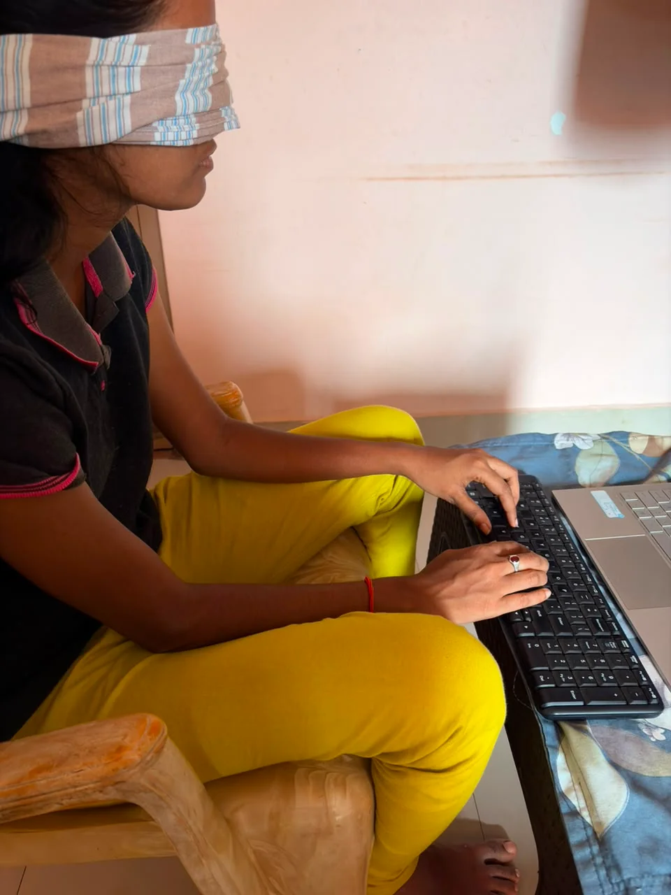
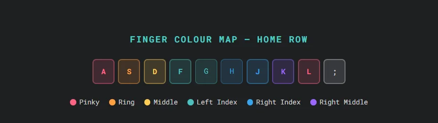
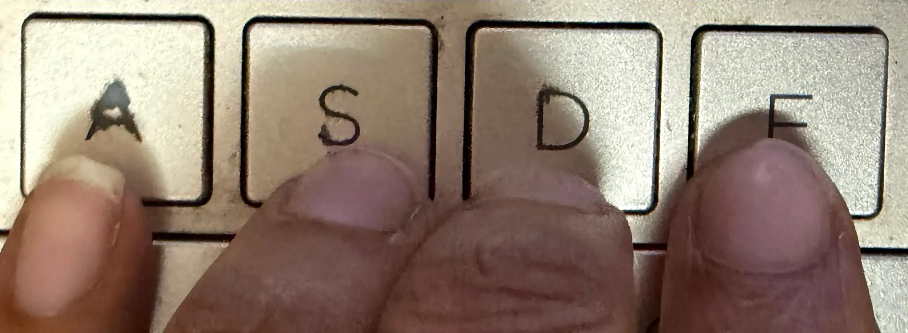
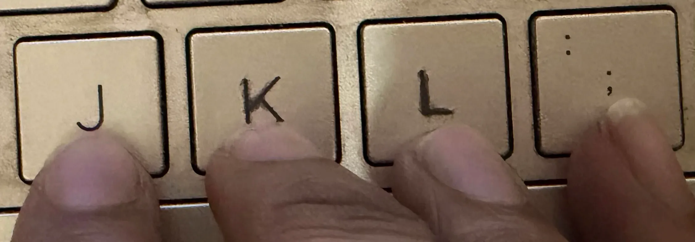
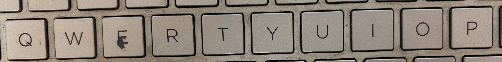
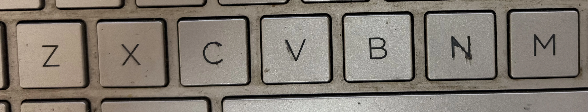
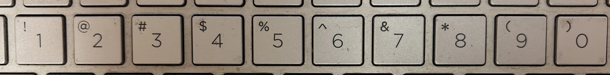

Touch typing is a method of typing where you use all ten fingers and never need to look at the keyboard. Each finger is assigned specific keys on the keyboard, and through repetition, your fingers learn exactly where each key is — the same way a pianist doesn't look at the piano keys while playing.
The average hunt-and-peck typist (looking at the keyboard and using 2–4 fingers) maxes out at around 40 WPM. The average touch typist reaches 60–80 WPM with ease, and expert touch typists regularly hit 100+ WPM. The difference is entirely in the method.

The home row is the middle row of letter keys on a standard QWERTY keyboard — the row containing A, S, D, F, G, H, J, K, L. This is where your fingers live when not pressing any key. Every keystroke starts and ends at the home row.
Notice the small raised bump on the F and J keys. These bumps exist specifically for touch typists — they let you feel when your index fingers are correctly positioned without looking. When you sit down to type, find these bumps with your index fingers and place all eight fingers on the home row.

| Finger | Keys Assigned | Home Key |
|---|---|---|
| Left Pinky | Q, A, Z, 1, Tab, Caps Lock, Shift | A |
| Left Ring | W, S, X, 2 | S |
| Left Middle | E, D, C, 3 | D |
| Left Index | R, F, V, T, G, B, 4, 5 | F |
| Left Thumb | Space bar (left side) | — |
| Right Thumb | Space bar (right side) | — |
| Right Index | Y, H, N, U, J, M, 6, 7 | J |
| Right Middle | I, K, comma (,), 8 | K |
| Right Ring | O, L, period (.), 9 | L |
| Right Pinky | P, ;, /, 0, Enter, Backspace, Shift | ; |
Advertisement
Spend the entire first week typing only home row keys: A S D F G H J K L ;. This feels slow and boring, but it is the critical foundation. Type simple words using only these letters — like "fall", "glad", "flask", "flesh". Do not move on until home row feels natural and automatic.


Introduce the top row: Q W E R T Y U I O P. Practice reaching up with the correct finger for each key, then immediately returning to home row. Drill words that use combinations of top row and home row keys. Keep accuracy above 95% — do not rush.

Add the bottom row: Z X C V B N M and punctuation. Reaching down is harder for most people — especially the pinky for Z. Practice deliberate downward reaches and immediately return to home row. By end of week 3, you should be able to type any word on the keyboard.

Add numbers (top row, same finger as the letter below) and common punctuation. Numbers are often the hardest — most people use wrong fingers for them for years. Learn them correctly now. Practice typing dates, phone numbers, and addresses.

Now that your fingers know all the keys, shift focus to speed. Take timed typing tests daily. Push yourself to go slightly faster each session. Accept that your WPM will be lower than your old hunt-and-peck speed for 4–6 weeks — this is normal and temporary. Stick with it.
⚠️ Important: Your typing speed will get temporarily worse when you start touch typing. This is completely normal and expected. You are replacing deeply ingrained muscle memory with new patterns. The temporary drop lasts 3–6 weeks. After that, you will exceed your old speed and keep climbing. Do not give up during this phase.
Most dedicated beginners reach basic touch typing competence (all keys, no looking) within 4–6 weeks. Reaching the same speed as your old hunt-and-peck style typically takes 2–3 months. After 6 months of regular practice, most touch typists are significantly faster than they ever were before.
The key variable is consistency. Practicing 15 minutes every day beats 2 hours on Sundays every time. Muscle memory is built through frequency, not volume.
Touch typing removes the biggest bottleneck in most people's typing: constantly glancing down to find keys. Once your fingers memorise the home row and its surrounding zones, your eyes stay on the screen, your error rate drops, and your words-per-minute climbs from the 30–40 WPM range typical of hunt-and-peck typing toward 60–100+ WPM. The finger-placement charts and week-by-week plan above are designed to get you there with a structured, repeatable routine rather than trial and error.
Apply what you just learned. Take a free typing test on Rocket Typing — use Easy mode to focus on accuracy, and keep your eyes on the screen instead of the keyboard.
Open Typing Test →Click anywhere outside the image, press Esc, or tap ✕ to close